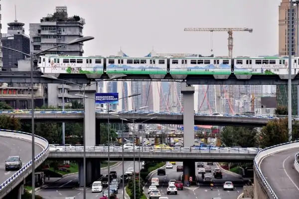
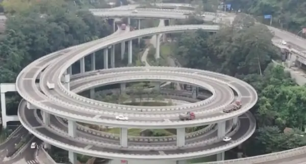
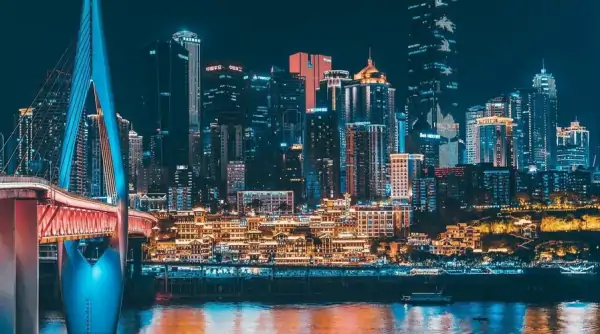
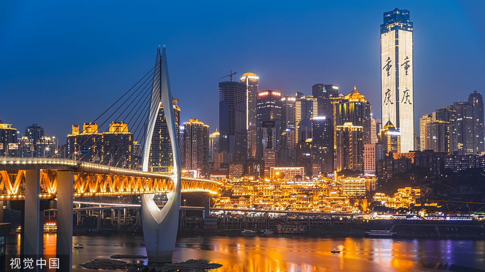

为什么称中国重庆为8D魔幻都市？它的魔幻体现在哪里？
这里的地势高低起伏，给人一种非常“立体”的感觉。 说到“山城”，人们都知道指的是重庆，因为这个城市中，山地的面积占了大多数， 平坦的地方比较少。当然，有如这些年重庆在网络上比较红火，也就是人们所说的网红城市，人们又给它起了个名字叫“8D魔幻城市”。 其实，造成这种城市布局的一个主要原因是因为它的山地面积太大，人们不得不去适应这样的地势。所以，在这里建起来一座城市，的确不容易。

它的魔幻体现在建筑风格非常独特，对空间的利用很充分。 由于这种地势的影响，导致这里的建筑风格与众不同，和那些地势平坦的城市不同， 这里的建筑高低错落，道路和楼房也是错综复杂。其中人们印象最深的是穿头而过的轻轨，以及“停靠在八楼的二路汽车”，被人们熟悉的洪崖洞。 在这里，人们会发现，从商场的一楼走出来是公路，从二楼走出来也是公路，甚至从三楼走出来依然是公路。因此给人非常奇幻的感觉。有些公路还是 住在楼顶上，停在楼顶的汽车更是不算什么新鲜事。总之，因为平坦的地方少，人们只能想办法利用它的空间，这也导致了道路的复杂程度更大。

“8D魔幻城市”只是一种比较夸张的说法，这样显得更加形象。 说它是8D城市可能有些夸张，但是，这里的确会给人一种耳目一新的感觉。穿梭 在这个更加立体的城市中，让人们感觉不再那么单调。所以，这样的风格也引来了不少的游客前来打卡。以后的这个城市可能会更加魔幻。

走近重庆,走近重庆人,你还会总结更多更多
